4 Common workflows¶
The five things you'll actually do 90% of the time.
4.1 Open or create a case¶
Two ways to start:
- Open existing: File → Open Workspace → point at any OpenFOAM case directory (must contain system/, constant/, and a 0/ folder).
- Create new: click New Case in the left sidebar to open the Case Builder wizard — pick a solver, mesh source, and boundary types.
4.2 Chat with the copilot¶
The Copilot panel on the right of the screen is where you talk to the AI. Ask questions like:
- "Why is my kOmegaSST diverging after 200 iterations?"
- "Set up a Boussinesq-buoyant simulation for this geometry."
- "Fix the boundary conditions so the outlet doesn't back-flow."
The copilot has full visibility of your case files — it reads controlDict, fvSchemes, the boundary field files, and the mesh statistics before answering. When it suggests a change, you'll see a Preview change button — nothing is written to disk until you approve it.
Tip
The status bar shows how many tokens you've used this month. Free-tier users see the counter turn amber near 40k tokens and red at 50k.
4.3 Generate a mesh¶
The Mesh tab in the left sidebar offers three routes:
- blockMesh — for simple rectangular / cylindrical domains, driven by the visual wizard.
- snappyHexMesh — for STL-based geometries, with layer and refinement controls.
- Gmsh — import a .msh file; Eddy runs gmshToFoam automatically.
After meshing, the mesh preview loads in the centre viewport. Rotate with left-click, pan with right-click, zoom with the scroll wheel.
Note
The in-app preview is a sanity check — for full post-processing hand the case off to ParaView with the toolbar button, which opens ParaView with the mesh loaded.
4.4 Run the solver¶
Click Run in the top toolbar. Eddy launches the solver in an embedded terminal at the bottom of the screen, and the Residuals panel starts plotting the log in real time. You can:
- Pause / resume / stop the run from the toolbar.
- Edit controlDict mid-run — Eddy detects runTimeModifiable true and reloads parameters at the next iteration.
- Watch the health indicator (Converging / Stagnated / Diverging) update live.
4.5 Send results to a cluster¶
The Cluster tab in the left sidebar sets up an SSH profile for your HPC. Once configured you can:
- Upload the current case to the cluster with one click.
- Submit a Slurm / LSF job from a template — Eddy fills in the case path and MPI process count.
- Watch the remote solver output stream back to the local console.
- Rsync results back for post-processing in ParaView.
4.6 Worked example — lid-driven cavity at Re = 1000¶
A short case with a published answer, so you can tell whether a surprising result is your setup or the solver. The lid-driven cavity is the standard CFD verification problem: a square box whose top wall slides sideways.
Reynolds number is set by Re = U·L/ν. With a 1 m box and a lid at 1 m/s, ν = 1e-3 gives Re = 1000. In the Case Builder:
- Solver — icoFoam.
- Mesh — dimensions 1 × 1 × 0.1, cells 128 × 128 × 1.
- Patches — movingWall on top (wall); fixedWalls on left, right, bottom (wall); frontAndBack on front, back (empty).
- Boundary condition — override U on movingWall to fixedValue, uniform (1 0 0).
- Physics — nu = 1e-3, laminar.
- Runtime — endTime 40, deltaT 0.002, writeInterval 5.
Note
The single cell in the third direction, with both its faces set to empty, is what makes the case 2D. Miss it and OpenFOAM happily solves a one-cell-thick 3D problem instead.
Run it, then compare the horizontal velocity along the vertical centreline against Ghia, Ghia & Shin (1982), the benchmark every CFD code is checked against. A correct run reproduces it to well under one percent, with the primary vortex centred near (0.53, 0.56). If your numbers are close, your installation and your workflow are both sound.
Tip
Re is set by viscosity here, not by lid speed. To move to Re = 100 leave the lid at 1 m/s and raise nu to 1e-2 — handy when you want a quicker, steadier case to practise on.
4.7 The same case, screen by screen¶
Every screen below is the real application running the lid-driven cavity from 4.6, in order, from a cold start to a finished solve.

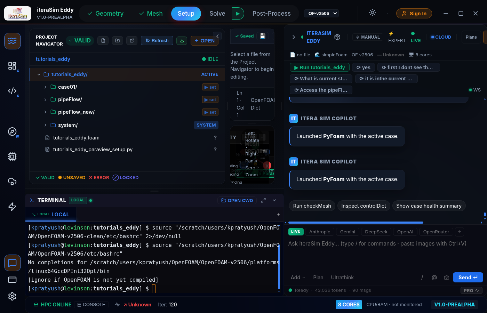

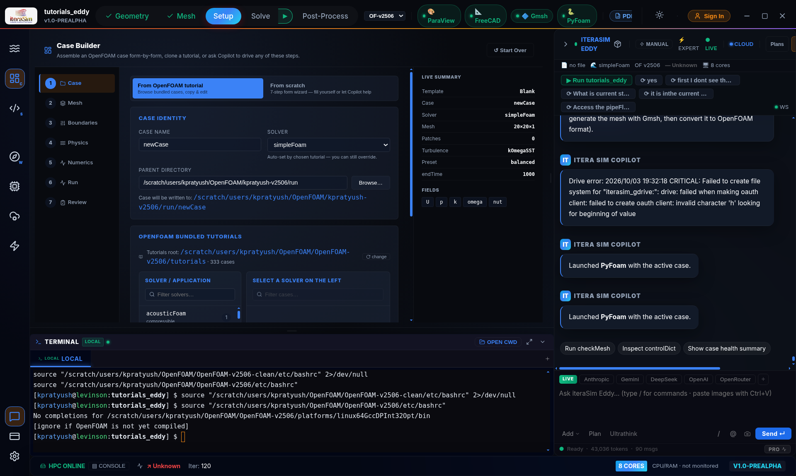

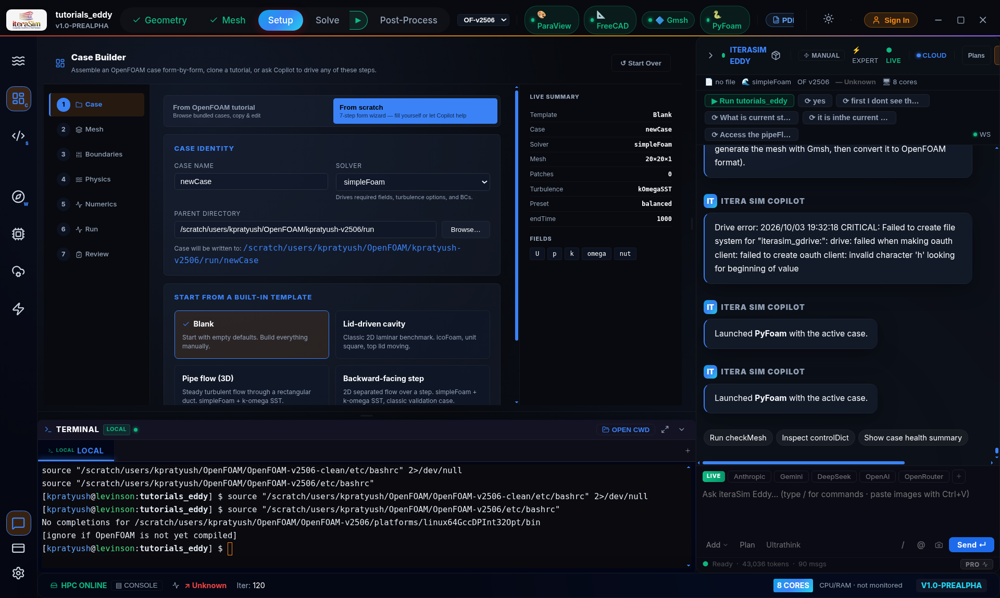

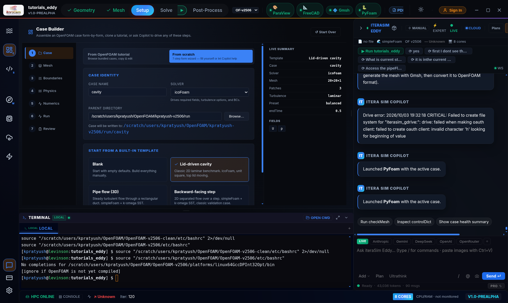

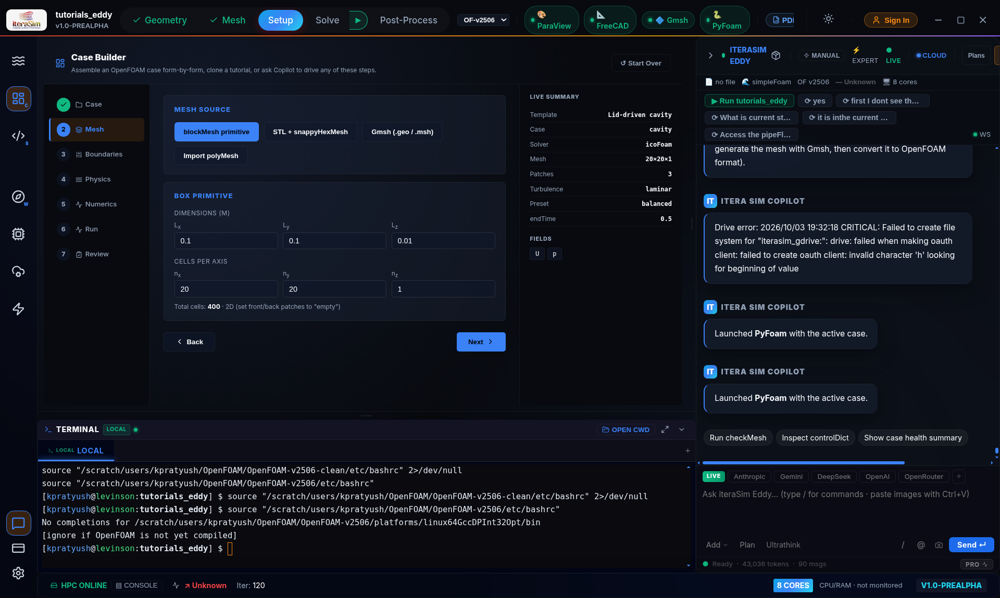

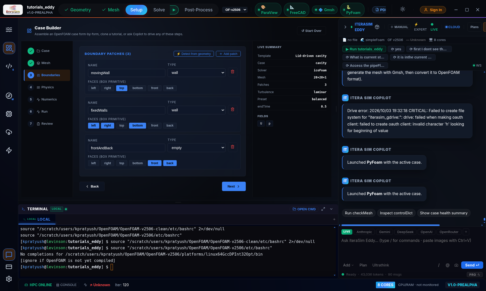

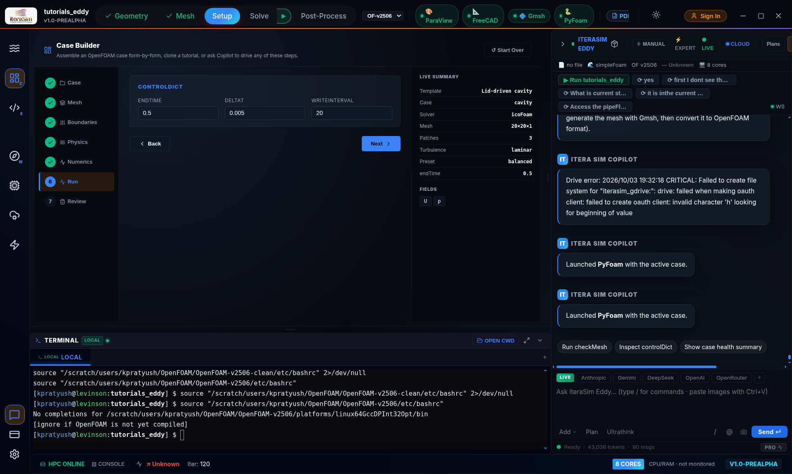

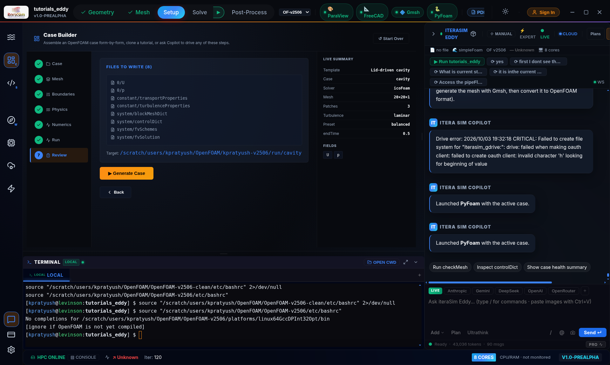

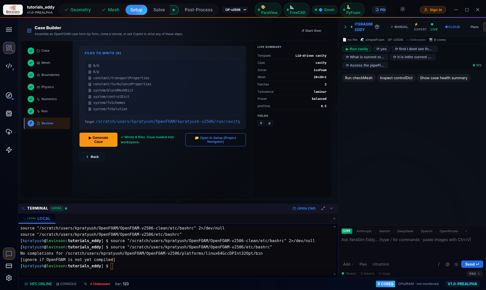

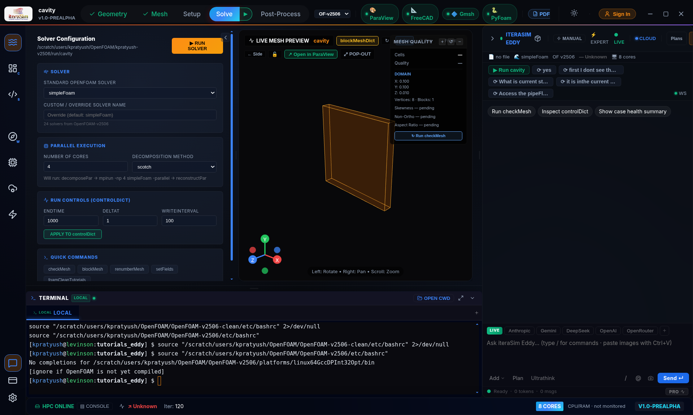

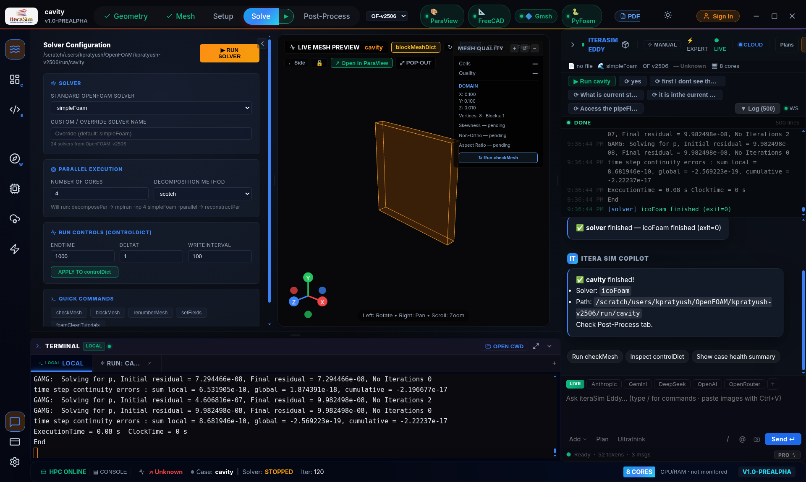
Results land in the case directory as time folders — 0.1, 0.2 … 0.5 for this case — each holding U, p and phi. Post-processing happens in ParaView, which the toolbar button launches.
ParaView opens as an empty session — the case is not handed to it automatically — so load it yourself. It takes four steps:
- File → Open, then pick the .foam file in your case directory. If there is not one, create it with touch cavity.foam: an empty file with that extension is what ParaView reads.
- Press Apply in the Properties panel. Nothing appears until you do.
- Add a Cell Data to Point Data filter. OpenFOAM stores results per cell; this interpolates them to the mesh points so the field is smooth rather than blocky.
- In the colouring dropdown choose U and Magnitude, then drag the time slider to the last step.

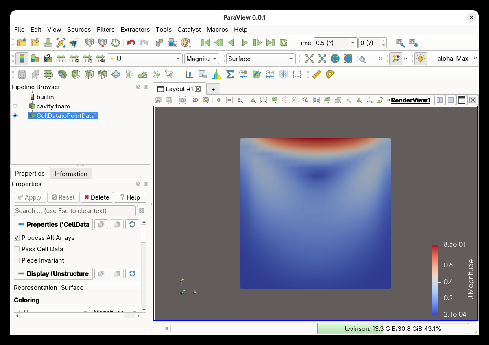

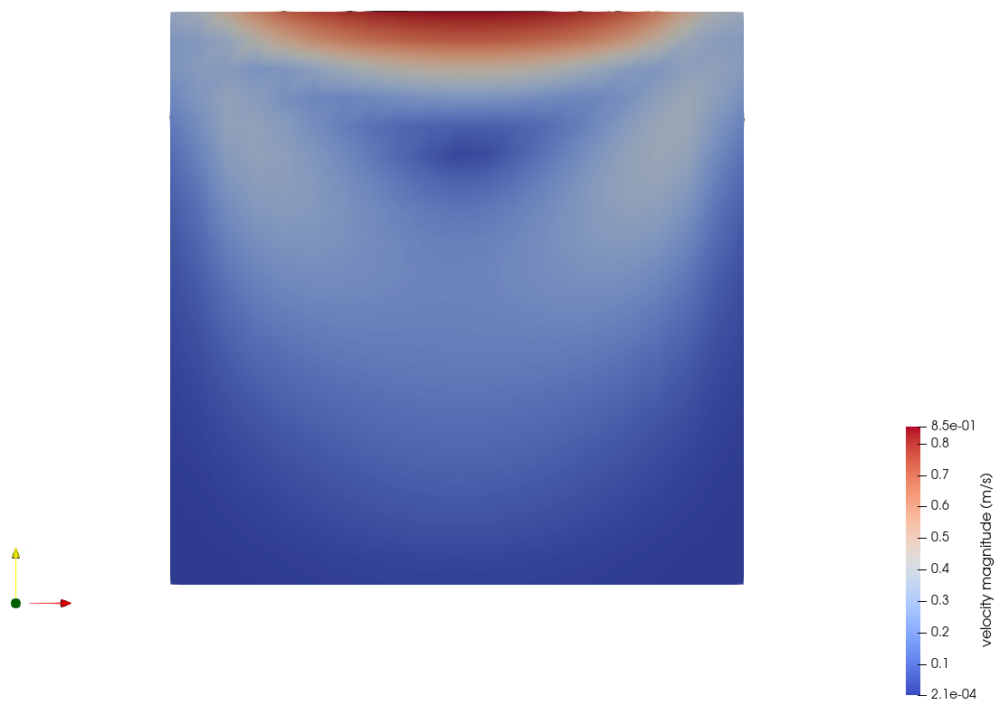
Note
From here the usual ParaView tools apply: Stream Tracer to show the recirculation, Plot Over Line down the vertical centreline to compare against benchmark data, and the camera controls to zoom into the corner vortices.
4.8 Not in this release¶
Two panels you may have seen in earlier previews are disabled in v1.0.0:
- Dataset Generator — parameter-study batch runner for building ML training sets.
- ML Training — in-app FNO / PINN / CNO training on OpenFOAM datasets.
Both are still under active development and will return in a future release. If you were relying on them, drop us a line at info@iterasim.in — early-access users get the beta build first.